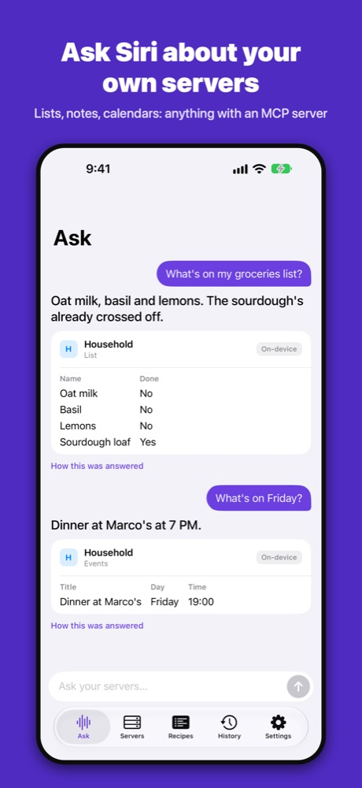
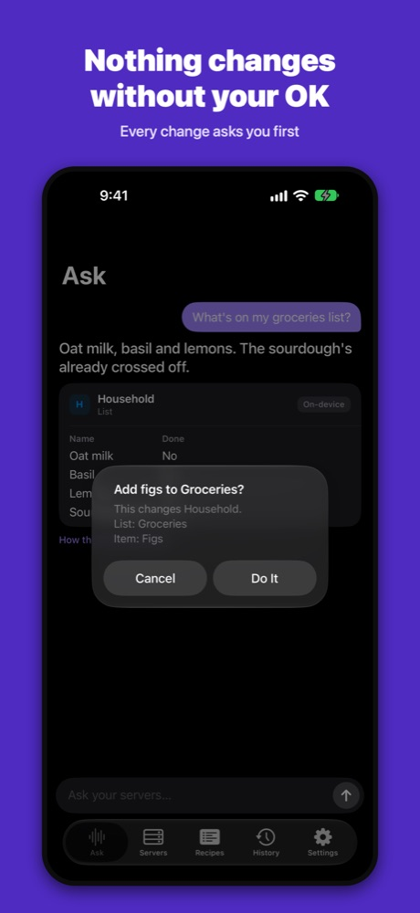
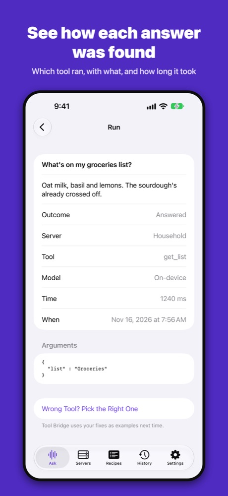
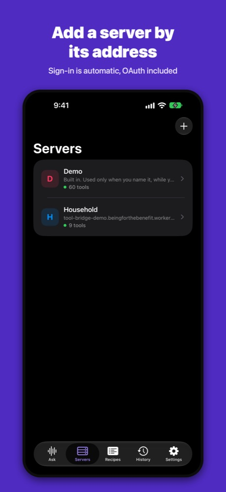
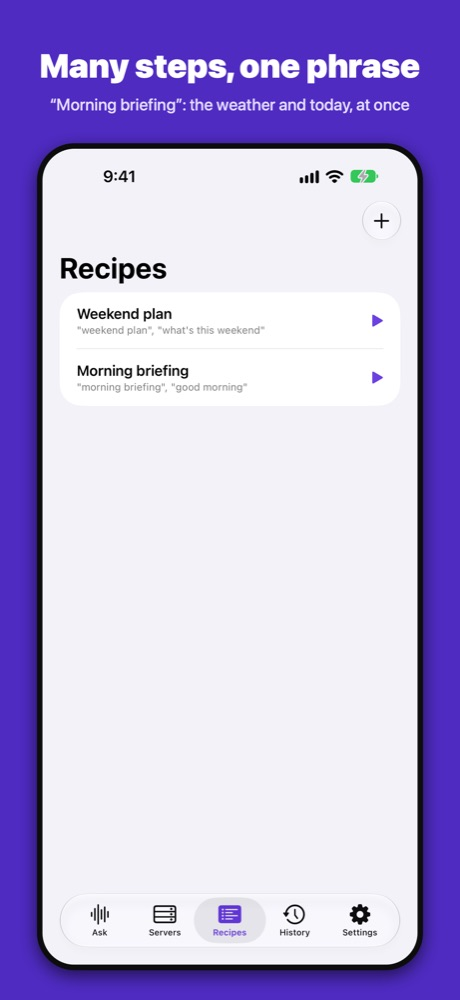
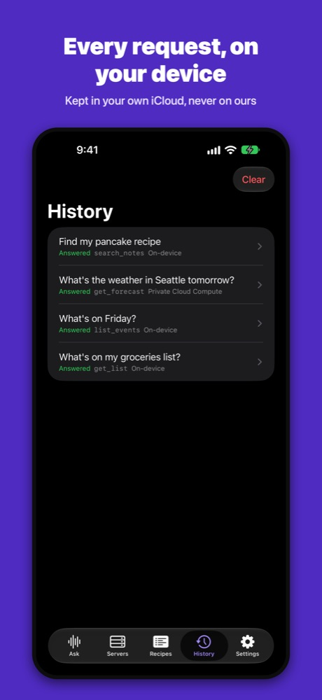
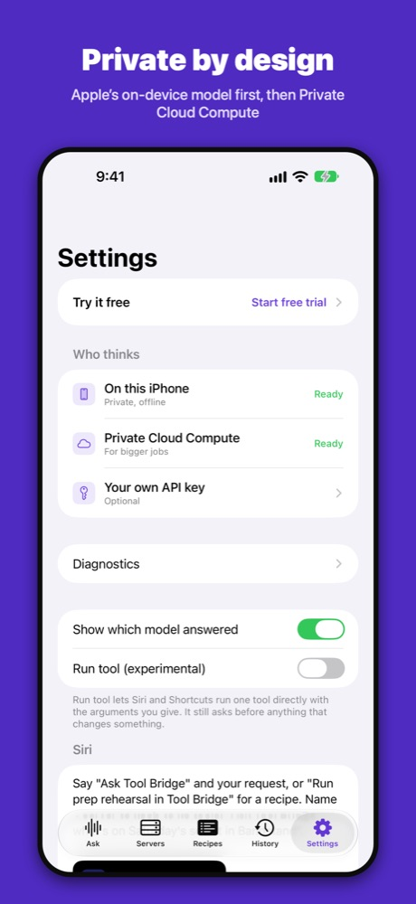

Tool Bridge
Your MCP servers, by voice.
For iPhone, iPad and Apple Watch, with iOS 27. Free for 14 days, then a one-time unlock shared with your family.







Ask Siri, hear the answer
Tool Bridge connects Siri to MCP servers: the same tools Claude and ChatGPT use to read and change your own services. Add a server’s address, and ask for what it knows or have it make a change, hands free.
“Ask Tool Bridge what’s on my groceries list.”
“Ask Tool Bridge to add figs to groceries.”
“Ask Tool Bridge what’s on the calendar Friday.”
How it works
Servers that use OAuth open their own sign-in page. No client ID, no setup.
Tool Bridge reads each server’s tools, then picks the right one for what you said and fills in the details.
Anything that sends or changes something asks you first.
Every request shows which tool ran, with what, and how long it took.
Private by design
Apple’s on-device model understands requests, with Private Cloud Compute for the harder ones.
Servers, tokens and history stay on your devices and in your own iCloud. Privacy
Optional, and History shows exactly what went where.
And more
Several steps under one phrase, like a morning briefing of the weather and today’s events.
Say a name the way it sounds and the app finds the one the server means.
Widgets, Shortcuts actions, Spotlight and an Apple Watch app, on iPhone, iPhone Duo and iPad.
Try it without a server of your own
In the app: Servers → + → paste an address.
https://tool-bridge-demo.beingforthebenefit.workers.dev/mcp: lists, notes, a calendar and a forecast, with invented data that resets every hour.https://tool-bridge-demo.beingforthebenefit.workers.dev/mcp-auth: the same behind an OAuth sign-in (an Approve button, no password).
Then ask “What’s on my groceries list?” in the app, or say “Ask Tool Bridge what’s on my groceries list.”
Support
A question, a server that won’t connect, or an idea: open an issue and we’ll answer there. Leave out tokens and anything private.